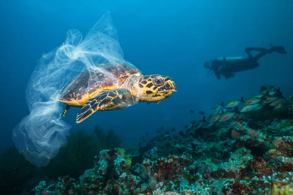

A poluição marinha, causada principalmente por plásticos, produtos químicos e derramamentos de petróleo, tem impactos devastadores sobre a fauna oceânica. Animais marinhos podem ingerir microplásticos, sofrer ferimentos por redes e lixo, ou ser contaminados por metais pesados e substâncias tóxicas.
O desequilíbrio ambiental afeta desde pequenos organismos, como o plâncton, até grandes mamíferos marinhos, comprometendo cadeias alimentares e ameaçando espécies inteiras. Além disso, a poluição pode provocar doenças, problemas reprodutivos e até a morte de muitos animais.
A preservação da vida marinha depende diretamente das nossas ações. A poluição dos oceanos — causada pelo descarte inadequado de resíduos, vazamentos de petróleo e emissões químicas — afeta gravemente a saúde dos animais marinhos e ameaça todo o equilíbrio dos ecossistemas. Reduzir o uso de plásticos, investir em tecnologias de pesca sustentável e promover a conscientização ambiental são medidas urgentes para garantir que as futuras gerações possam conviver com mares saudáveis e cheios de vida. Proteger os oceanos é proteger a nós mesmos, já que sua biodiversidade é essencial para o equilíbrio do planeta.